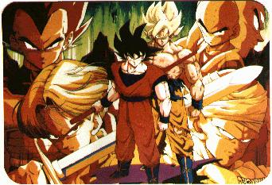

Dragonball (Z)

From the Anime Pocket Guide:
Cast:
Gokuu Son ................................. Masako Nozawa
Gohan Son ................................. Masako Nozawa
Tenshinhan ............................. Hirotaka Suzuoki
Chaozu ..................................... Hiroko Emori
Karin ..................................... Ichirou Nagai
Chichi ................................... Naoko Watanabe
Annin .................................... Keiko Yokozawa
Piccolo/Kami-sama .......................... Takeshi Aono
Buruma ..................................... Hiromi Tsuru
Barduck ................................... Masako Nozawa
Woolong ................................... Naoki Tatsuta
Kao Pai Pai .............................. Chikao Ohtsuka
Shen Long/Announcer ........................ Kenji Utsumi
Vegita (Dragonball Z) ................... Ryo Horikawa
Piccolo (Dragonball Z) ................ Toshio Furukawa
Trunks (Dragonball Z) .................. Takeshi Kusao
Kuririn (Dragonball Z) .................. Mayumi Tanaka
Garlic Jr.(Dragonball Z) .................. Shigeru Chiba
Chichi (Dragonball Z) .................... Mayumi Shoh
Number 13 (Dragonball Z) ............... Kazuyuki Sogabe
Number 16 (Dragonball Z) .............. Hikaru Midorikawa
Number 17 (Dragonball Z) ............... Shigeru Nakahara
Number 18 (Dragonball Z) ...................... Miki Itou
Cell (Dragonball Z) ................. Norio Wakamoto
Cynthia (Dragonball Z) ................. Youko Kawanami
Maron (Dragonball Z) ................. Yuko Kobayashi
Lunch (Dragonball Z) .................... Mami Koyama
Seripa (Dragonball Z) ...................... Yuko Mita
Kaioh (Dragonball Z) ................... Jouji Yanami
Narrator (Dragonball Z) ................... Jouji Yanami
Goten (Dragonball Z #200-) ............ Masako Nozawa
Biideru (Dragonball Z #200-) ........... Yuko Minaguchi
Ireza (Dragonball Z #200-) ............. Megumi Urawa
Description: (by Curtis Hoffmann)
This series is about Gokuu Son, a were-monkey whose original
quest was to find the 7 Dragonballs. It is said that once all 7
Dragonballs are put together, a great dragon will appear and will
grant 1 wish, after which the Dragonballs will scatter. There are
actually two series so far:
Dragonball - This followed Gokuu on his original quest. There
are lots of silly gags and toilet humor, as well as some
great character acting and pathos. Gokuu Son is based on
the Monkey King legend, but is more naive and innocent than
he is strong and valorous (which is saying a LOT). As his
quest continues, he picks up lots of friends and enemies,
which keeps the storyline fresh. Also, upon the completion
of a quest, it must begin again since the Dragonballs are
scattered, leading to new & even more bizarre adventures.
Most villains belong to the "Red Ribbon" organization of
which the most deadly assassin is...Kao Pai Pai.
Dragonball Z - This differs from the 1st series in that Gokuu
disappeared into a strange realm and emerged as a super-
Saiyajin. Combat is now emphasized rather than the toilet
humor and story of the last series. In recent storylines,
the plot centers on 4 androids from the future who came to
kill Gokuu and fights everyone who tries to protect him.
Cell, one of the 4 androids, absorbs 2 of the others to
become capable of destroying the universe. Gohan, Gokuu's
son, is the only one who can stop him since he has been
shown to be more powerful -- and faster -- than his father.
This is arguably one of the most popular (and money making)
anime TV series in Japan today.
Other Resources
Anime Video Game Resource Center © 1998 by Luis A. Cruz